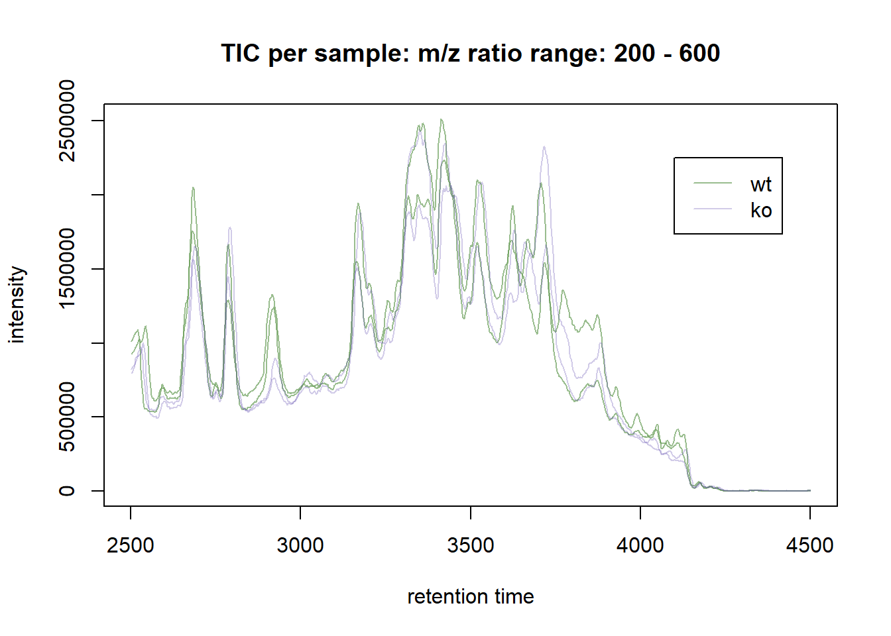

6 Vrije besteding: een nieuwe skill ontwikkelen
Tijdens de DSFB2 portfolio lessen heb ik 32 uur vrij te besteden gekregen om te werken aan een nieuwe Data Science skill. Deze skill heb ik gekozen door mijzelf af te vragen waar ik over twee jaar wil zijn. Ik zie mijzelf dan als biomedisch analist bijdragen aan onderzoek naar de ontwikkeling, bestrijding en genezing van ziekten. Daarbij gebruik ik de vaardigheden die ik heb geleerd tijdens de Data Science for Biology minor om mijn onderzoeksresultaten te analyseren en presenteren. Gedurende mijn stage of in het werkveld hoop ik dat ik, onderandere, eiwit analyses uitvoer met de technieken High-Performance Liquid Chromatography (HPLC) en massaspectrometrie.
Tijdens mijn BMR specialisatie projecticum heb ik gewerkt met een HPLC. De UV-detectie resultaten kwamen op de computer binnen via de software Clarity Lite, waarna handmatig data van interesse is gekopieerd naar een Excel bestand. Van deze data zijn tabellen gemaakt in PowerPoint en grafieken in Excel. Statistische tests zijn uitgevoerd in SPSS. Om het aantal handmatige stappen en de vatbaarheid voor fouten binnen deze analyse te verminderen, ben ik gaan onderzoeken of ik de ruwe Clarity Lite data kan exporteren en aan een R package kan ‘voeren’ voor een volledige data analyse in RStudio. Al vrij snel bleek ik geen R package te kunnen vinden voor de analyse van (HP)LC data. Ik ben wel een handvol packages tegengekomen voor analyses van LC-MS of GC-MS data __(LINK NAAR https://journals.plos.org/plosone/article?id=10.1371/journal.pone.0198311)__. Vloeistofchromatografie en massaspectrometrie zijn tegenwoordig vrijwel niet meer los van elkaar te denken. Daarnaast vind ik massaspectrometrie zeer interessant. Van een docent kreeg ik een zelf-georganiseerde introductie op massaspectrometrie, ik had er graag meer over geleerd tijdens mijn opleiding. Daarom heb ik ervoor gekozen, om mij voor 32 uur te richten op het analyseren van LC-MS data met R als nieuwe skill.
| Algorithm | Designed for | Used Dimensions | Environment | Visual tools |
|---|---|---|---|---|
| GCalignR | GC-FID | RT | R | Yes |
| amsrpm | LC-MS | RT, I, m/z | R | No |
| msInspect/AMT | LC-MS/MS | RT, I, m/z | Java, R | No |
| PETAL | LC-MS | RT, m/z | R | No |
| Podwojski | LC-MS | RT, I, m/z | R | No |
| ptw | LC-MS | I, RT | R | No |
| XCMS | LC-MS | RT, I, m/z | R | Yes |
| Note: | ||||
| Deze tabel is een onderdeel van de tabel ‘S1. Summary of published algorithms implemented … datasets.’ uit LINK. De packages waar ik me verder in heb verdiept, zijn groen gekleurd. |
Het is me niet gelukt om het {amsrpm} package, beschikbaar als amsrpm.tar.gz, te installeren. Van het {ptw} package is een publieke repository met demo’s beschikbaar, maar de meeste informatie kon ik vinden over het {xcms} package. Er bestaat een publieke repository met verschillende vignettes waarin het package uitgebreid wordt gedemonstreerd. Belangrijk is ook dat de vignettes gebruik maken van ruwe data beschikbaar in andere ‘installeerbare’ packages, zoals {faahKO}. Na het kopiëren van de repository kon ik met ‘install()’ het package installeren. Hiervoor moeten RStudio versie 4.2 en RTools versie 4.2 gebruikt worden. Buiten de repository om kunnen de functions uit dit package door een ieder geïnstalleerd worden met ‘devtools::install(“sneumann/xcms”)’.
6.1 Reproductie vignette ‘LCMS data preprocessing and analysis with xcms’
Het vignette ‘LCMS data preprocessing and analysis with xcms’, te vinden op BioConductor of onder ‘xcms/vignettes/xcms.Rmd’ in de repository, demonstreert hoe het {xcms} package gebruikt kan worden voor het importeren en inspecteren van data, preproccesing en de eigenlijke analyse. Daarvoor maakt het gebruik van data uit een studie van Alan Saghatelian et al. uit 2004, beschikbaar als {faahKO} package. Deze onderzoekers zijn opzoek gegaan naar lipiden in het zoogdier brein die gereguleerd worden door het enzym fatty acid amide hydrolase (FAAH). Daartoe hebben ze met LC-MS het metaboloom in kaart gebracht van wild-type muizen en van knock-out muizen met een inactief FAAH gen. CITEREN NAAR DEZE STUDIE. In het {faahKO} package is in NetCDF format de ruwe, positive ion en centroid mode LC-MS data aanwezig van ruggengraatmonsters van wild-type (WT) en knock-out (KO) muizen. Het vignette beperkt de analyse tot vier WT muizen en vier KO muizen CITEER NAAR DE VIGNETTE.
6.1.1 1) Data import
# Installeer de volgende packages via CRAN of BioConductor en laad ze vervolgens met:
library(xcms)
library(faahKO)
library(RColorBrewer)
library(pander)
library(magrittr)
library(pheatmap)
library(SummarizedExperiment)
# Maak een variabele met de paden naar de acht te analyseren files:
cdfs <- dir(system.file("cdf", package = "faahKO"), full.names = TRUE,
recursive = TRUE)[c(1, 2, 5, 6, 7, 8, 11, 12)]
# Maak een phenodata dataframe:
pd <- data.frame(sample_name = sub(basename(cdfs), pattern = ".CDF", replacement = "", fixed = TRUE), sample_group = c(rep("KO", 4), rep("WT", 4)), stringsAsFactors = FALSE)
# Laad de ruwe data:
raw_data <- readMSData(files = cdfs, pdata = new("NAnnotatedDataFrame", pd), mode = "onDisk")
head(raw_data)## MSn experiment data ("OnDiskMSnExp")
## Object size in memory: 0.03 Mb
## - - - Spectra data - - -
## MS level(s): 1
## Number of spectra: 6
## MSn retention times: 41:41 - 41:49 minutes
## - - - Processing information - - -
## Data loaded [Thu Jun 2 17:09:00 2022]
## MSnbase version: 2.22.0
## - - - Meta data - - -
## phenoData
## rowNames: 1
## varLabels: sample_name sample_group
## varMetadata: labelDescription
## Loaded from:
## ko15.CDF
## protocolData: none
## featureData
## featureNames: F1.S0001 F1.S0002 ... F1.S0006 (6 total)
## fvarLabels: fileIdx spIdx ... spectrum (35 total)
## fvarMetadata: labelDescription
## experimentData: use 'experimentData(object)'raw_data <- filterRt(raw_data, c(2500, 3500)) ## beperk de datasets tot retentietijden van 2500 tot 3500 seconden, om de procedure te versnellen.
head(raw_data)## MSn experiment data ("OnDiskMSnExp")
## Object size in memory: 0.03 Mb
## - - - Spectra data - - -
## MS level(s): 1
## Number of spectra: 6
## MSn retention times: 41:41 - 41:49 minutes
## - - - Processing information - - -
## Data loaded [Thu Jun 2 17:09:00 2022]
## Filter: select retention time [2500-3500] and MS level(s), 1 [Thu Jun 2 17:09:00 2022]
## MSnbase version: 2.22.0
## - - - Meta data - - -
## phenoData
## rowNames: 1
## varLabels: sample_name sample_group
## varMetadata: labelDescription
## Loaded from:
## ko15.CDF
## protocolData: none
## featureData
## featureNames: F1.S0001 F1.S0002 ... F1.S0006 (6 total)
## fvarLabels: fileIdx spIdx ... spectrum (35 total)
## fvarMetadata: labelDescription
## experimentData: use 'experimentData(object)'Het phenodata dataframe functioneert als beschrijving van de experimentele opzet. Voor een echt experiment wordt een tabel aangemaakt met een beschrijving van elk sample. ‘raw_data’ is een ‘OnDiskMSnExp’ object dat per spectrum de gemeten retentietijden, m/z ratio’s en intensiteiten bevat voor alle monsters. We gebruiken ‘fromFile’ om de m/z ratio’s per monster te organiseren.
6.1.2 2) Data inspectie
mzs <- mz(raw_data)
mzs_by_file <- split(mzs, f = fromFile(raw_data))
length(mzs_by_file)## [1] 8We beginnen met het plotten van de Base Peack Chromatogrammen (BPCs) en Total Ion Chromatogrammen (TICs) voor elk monster. Een BPC laat een piek zien gebaseerd op het ion met het sterkste signaal. Een TIC laat een piek als som van alle ionen zien. In de ‘chromatogram()’ function staat het ‘aggregationFun’ argument op ‘max’ of ‘sum’ voor respectievelijk een BPC of TIC.
load("workspace.RData")
# Verkrijg BPC:
#bpis <- chromatogram(raw_data, aggregationFun = "max") ## deze stap duurt lang en hoeft niet herhaald te worden indien de workspace geladen wordt
group_colors <- paste0(brewer.pal(3, "Set1")[1:2], "60") ## geef WT en KO een andere kleur
names(group_colors) <- c("KO", "WT")
# Verkrijg TIC:
#bpis_2 <- chromatogram(raw_data, aggregationFun = "sum")
# Plot chromatogrammen:
plot(bpis, col = group_colors[raw_data$sample_group])
plot(bpis_2, col = group_colors[raw_data$sample_group])
https://bioconductor.org/packages/3.14/bioc/html/xcms.html
https://www.uab.edu/proteomics/metabolomics/workshop/2017/day3/intro_to_XCMS_in_R.pdf
https://bioconductor.org/packages/devel/bioc/vignettes/xcms/inst/doc/xcms.html
PLAN: INTRODUCTIE SCHRIJVEN, WAT MIJN PLAN WAS EN WAT HET UITEINDELIJK IS GEWORDEN EN DE MOTIVATIE DAARVOOR INTRO SCHRIJVEN OP DE DATA DIE GEBRUIKT IS VOOR HET VIGNETTE VOORBEELD ANALYSE KOPIEËREN EN PLAKKEN, WELLICHT WAT DINGEN AANPASSEN ZOALS KLEURTJES EN SAMPLES VAN PLOTS BIJ ELKE ANALYSE STAP OPSCHRIJVEN WAT IK DOE EN WAAROM
| Stap | Wat | Wanneer | Hoelang |
|---|---|---|---|
| 1 | Oriënteren op de (R) packages e.d. die beschikbaar zijn voor chromatografie data analyse in RStudio. | ? | 2,5 uur |
| 2 | Uitzoeken in welke formats de data uit Clarity Lite geëxporteerd kan worden. | ? | 1,5 uur |
| 3 | Afspraak maken om op de HPLC computer op HL7 te mogen snuffelen. | ? | 2 uur |
| 4 | Helder maken: wat wil ik precies dat de packages doen? | ? | 1,5 uur |
| 5 | Twee packages o.i.d. kiezen om verder uit te diepen. | ? | x |
| 6 | Installeren van packages, werkzaamheid krijgen. | ? | 2 uur |
| 7 | Packages testen met nep data of data geëxporteerd uit Clarity Lite. | ? | 2 uur |
| 8 | Verder verdiepen in het gebruik van de packages. | ? | ~ |
| 9 | … | ? | … |
| 10 | … | ? | … |
| Dag | Stap | Gedaan | Tijd |
|---|---|---|---|
| Maandag | 1 | … | … |
| Dinsdag | 1 | … | … |
45 minuten: logboek opzetten
45 minuten - 1 uur: data van HPLC computer gehaald
Plan: één dag oriënteren, als ik dan niet op een package uitkom ga ik de data analyse dupliceren in R.
21:52 - 22:20
Beste optie tot nu toe gevonden: GCalignR
https://journals.plos.org/plosone/article?id=10.1371/journal.pone.0198311
22:31 overzicht gevonden van packages beschikbaar voor LC-MS data. Er is niks voor alleen LC data. Package leren uitvoeren op neppe dataset?
https://bioconductor.org/packages/devel/bioc/vignettes/xcms/inst/doc/xcms.html
22:39
file:///C:/Users/steph/Downloads/v18i04.pdf
21:51 verder gaan
23:26: niet gelukt om amsrpm.tar.gz package te downloaden met install.packages(“amsrpm_1.2.tar.gz”, repos=NULL, type=“source”) in Rtools28 of R Console of met install.packages(“amsrpm_1.2.tar.gz”, repos=NULL, type=“source”) in R Terminal. Package wordt niet herkend.
http://www.ryantmoore.org/files/ht/htrtargz.pdf
https://stat.ethz.ch/pipermail/r-help/2008-August/169599.html
Kan geen andere link naar amsrpm package vinden
23:42 nieuwe optie: ptw package.
https://github.com/rwehrens/ptw
https://www.yumpu.com/en/document/read/54160321/package-ptw
XCMS
https://bioconductor.org/packages/3.14/bioc/html/xcms.html
https://www.uab.edu/proteomics/metabolomics/workshop/2017/day3/intro_to_XCMS_in_R.pdf
https://bioconductor.org/packages/devel/bioc/vignettes/xcms/inst/doc/xcms.html
00:16 mijn R versie is te oud dus mijn BioConductor versie is te oud en ik kan deze sowieso niet updaten want is steeds ‘in gebruik’? BioConducter versie te oud dus kan faaK0 enzo niet installeren.
Heb nu een oude versie van xcms, 3.15 ofzo.
00:48 nog steeds gigantisch aan het kutten. Heb een laptop met R 4.2, devtools::install(“sneumann/xcms”) aborts op het laatste moment. Install() na kopiëren van repo werkt ook niet. Hopelijk heeft het te maken met een erouderde versie van RTools.
01:07 Nadat RTools 4.2 was geïnstalleerd, kon ik met install() xcms downloaden in repo. Met BiocManager faahKO geinstalleerd.
13:10 - 14:16, verder gegaan met XCMS analyse van faahKO samples
14:18
14:36 random crash van sessie, alles opnieuw uitvoeren voor environment. History en Environment leeg.
14:50 verdergaan
16:17 bijna op de helft?
~16:30 verder
17:11 bij Alignment aangekomen
22:10 verdergaan
22:25 error met adjustRtime
22:48 er zijn blijkbaar vaker problemen met biocparralel met dit package, nog 2x runnen gaf ineens resultaat
23:15 net over helft
23:25 - 23:35 faahKO artikel gezocht
00:23 gezocht naar een vervolg op vignette? faahKO artikel zo-zo gelezen, opzoek naar een conclusie xD
00:39
01:54 afgemaakt en kan workspace delen
11:00 proberen book te builden op laptop dave
11:47 gelukt, setwd moeten veranderen, dir_tree en hero image link.
11:53 committen hangt vast
12:11 probleem met committen opgelost
12:59 verdergaan 14:20 pauze 14:30 verder 15:00 pauze 15:07 verder 15:43 pauze 15:55 verder 16:15 pauze 16:31 verder